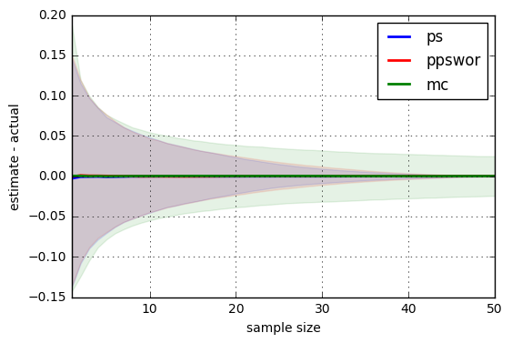

Introduction: In this post, I'm going to describe some efficient approaches to estimating the mean of a function over a finite domain. Despite the ubiquity of Monte Carlo estimation, it is really inefficient for finite domains. In particular, I'll focus on lesser-known algorithms based on sampling without replacement.
Setup: Suppose we want to estimate an expectation of a deterministic function $f$ over a (large) finite universe of $n$ elements where each element $i$ has probability $p_i$:
$$ \mu \overset{\tiny{\text{def}}}{=} \sum_{i=1}^n p_i f(i) $$
However, $f$ is too expensive to evaluate $n$ times. So let's say that we have $m \le n$ evaluations to form our estimate. (Obviously, if we're happy evaluating $f$ a total of $n$ times, then we should just compute $\mu$ exactly with the definition above.)
Monte Carlo: The most well-known approach to this type of problem is Monte Carlo (MC) estimation: sample $x^{(1)}, \ldots, x^{(m)} \overset{\tiny\text{i.i.d.}}{\sim} p$, return $\widehat{\mu}_{\text{MC}} = \frac{1}{m} \sum_{i = 1}^m f(x^{(i)})$. Remarks: (1) Monte Carlo can be very inefficient because it resamples high-probability items over and over again. (2) We can improve efficiency—measured in $f$ evaluations—somewhat by caching past evaluations of $f$. However, this introduces a serious runtime inefficiency and requires modifying the method to account for the fact that $m$ is not fixed ahead of time. (3) Even in our simple setting, MC never reaches zero error; it only converges in an $\epsilon$-$\delta$ sense.
Sampling without replacement: We can get around the problem of resampling the same elements multiple times by sampling $m$ distinct elements. This is called a sampling without replacement (SWOR) scheme. Note that there is no unique sampling without replacement scheme; although, there does seem to be a de facto method (more on that later). There are lots of ways to do sampling without replacement, e.g., any point process over the universe will do as long as we can control the size.
An alternative formulation: We can also formulate our estimation problem as seeking a sparse, unbiased approximation to a vector $\boldsymbol{x} \in \mathbb{R}_{>0}^n$. We want our approximation, $\boldsymbol{s}$, to satisfy $\mathbb{E}[\boldsymbol{s}] = \boldsymbol{x}$ while $|| \boldsymbol{s} ||_0 \le m$. This will suffice for estimating $\mu$ (above) when $\boldsymbol{x}=\boldsymbol{p}$, the vector of probabilities, because $\mathbb{E}[\boldsymbol{s}^\top\! \boldsymbol{f}] = \mathbb{E}[\boldsymbol{s}]^\top\! \boldsymbol{f} = \boldsymbol{p}^\top\! \boldsymbol{f} = \mu$ where $\boldsymbol{f}$ is a vector of all $n$ values of the function $f$. Obviously, we don't need to evaluate $f$ in places where $\boldsymbol{s}$ is zero so it works for our budgeted estimation task. Of course, unbiased estimation of all probabilities is not necessary for unbiased estimation of $\mu$ alone. However, this characterization is a good model for when we have zero knowledge of $f$. Additionally, this formulation might be of independent interest, since a sparse, unbiased representation of a vector might be useful in some applications (e.g., replacing a dense vector with a sparse vector can lead to more efficient computations).
Priority sampling: Priority sampling (Duffield et al., 2005; Duffield et al., 2007) is a remarkably simple algorithm, which is essentially optimal for our task, if we assume no prior knowledge about $f$. Here is pseudocode for priority sampling (PS), based on the alternative formulation.
$$ \begin{align*} &\textbf{procedure } \textrm{PrioritySample} \\ &\textbf{inputs: } \text{vector } \boldsymbol{x} \in \mathbb{R}_{>0}^n, \text{budget } m \in \{1, \ldots, n\}\\ &\textbf{output: } \text{sparse and unbiased representation of $\boldsymbol{x}$} \\ &\quad u_1, \ldots, u_n \overset{\tiny\text{i.i.d.}} \sim \textrm{Uniform}(0,1] \\ &\quad k_i \leftarrow u_i/x_i \text{ for each $i$} \quad\color{grey}{\text{# random sort key }} \\ &\quad S \leftarrow \{ \text{$m$-smallest elements according to $k_i$} \} \\ &\quad \tau \leftarrow (m+1)^{\text{th}}\text{ smallest }k_i \\ &\quad s_i \gets \begin{cases} \max\left( x_i, 1/\tau \right) & \text{ if } i \in S \\ 0 & \text{ otherwise} \end{cases} \\ &\quad \textbf{return }\boldsymbol{s} \end{align*} $$
$\textrm{PrioritySample}$ can be applied to obtain a sparse and unbiased representation of any vector in $\mathbb{R}_{>0}^n$. We make use of such a representation for our original problem of budgeted mean estimation ($\mu$) as follows:
$$ \begin{align*} & \boldsymbol{s} \gets \textrm{PrioritySample}(\boldsymbol{p}, m) \\ & \widehat{\mu}_{\text{PS}} = \sum_{i \in S} s_i \!\cdot\! f(i) \end{align*} $$
Explanation: The definition of $s_i$ might look a little mysterious. In the $(i \in S)$ case, it comes from $s_i = \frac{p_i}{p(i \in S | \tau)} = \frac{p_i}{\min(1, x_i \cdot \tau)} = \max(x_i,\ 1/\tau)$ (recall $x_i = p_i$). The factor $p(i \in S | \tau)$ is an importance-weighting correction that comes from the Horvitz-Thompson estimator (modified slightly from its usual presentation to estimate means), $\sum_{i=1}^n \frac{p_i}{q_i} \cdot f(i) \cdot \boldsymbol{1}[ i \in S]$, where $S$ is sampled according to some process with inclusion probabilities $q_i = p(i \in S)$. In the case of priority sampling, we have an auxiliary variable for $\tau$ that makes computing $q_i$ easy. Thus, for priority sampling, we can use $q_i = p(i \in S | \tau)$. This auxiliary variable adds a tiny bit of extra noise to our estimator, which is tantamount to one extra sample (see Szegedy, 2005 below).
Proof of unbiasedness
The following proof is a little different from that in the priority sampling papers. I think it's more straightforward. More importantly, it shows how we can extend the method to sample from slightly different without-replacement distributions (as long as we can compute $q_i(\tau) = \mathrm{Pr}(i \in S \mid \tau) = \mathrm{Pr}(k_i \le \tau)$).
$$ \begin{eqnarray} \mathbb{E}\left[ \widehat{\mu}_{\text{PS}} \right] &=& \mathbb{E}_{\tau, k_1, \ldots, k_n}\! \left[ \sum_{i=1}^n \frac{p_i}{q_i(\tau)} \cdot f(i) \cdot \boldsymbol{1}[ k_i \le \tau] \right] \\ &=& \mathbb{E}_{\tau}\! \left[ \sum_{i=1}^n \frac{p_i}{q_i(\tau)} \cdot f(i) \cdot \mathbb{E}_{k_i | \tau}\!\Big[ \boldsymbol{1}[ k_i \le \tau ] \Big] \right] \\ &=& \mathbb{E}_{\tau}\! \left[ \sum_{i=1}^n \frac{p_i}{q_i(\tau)} \cdot f(i) \cdot \mathrm{Pr}( k_i \le \tau ) \right] \\ &=& \mathbb{E}_{\tau}\! \left[ \sum_{i=1}^n \frac{p_i}{q_i(\tau)} \cdot f(i) \cdot q_i(\tau) \right] \\ &=& \mathbb{E}_{\tau}\! \left[ \sum_{i=1}^n p_i \cdot f(i) \right] \\ &=& \sum_{i=1}^n p_i \cdot f(i) \\ &=& \mu \end{eqnarray} $$
Remarks:
-
Priority sampling satisfies our task criteria: it is both unbiased and sparse (i.e., under the evaluation budget).
-
Priority sampling can be straightforwardly generalized to support streaming $x_i$, since the keys and threshold can be computed incrementally. Furthermore, it can be stopped at any time without fixing $m$ in advance.
-
Priority sampling was designed for estimating subset sums, i.e., estimating $\sum_{i \in I} x_i$ for some $I \subseteq \{1,\ldots,n\}$. In this setting, the set of sampled items $S$ is chosen to be "representative" of the population, albeit much smaller. In the subset sum setting, priority sampling has been shown to have near-optimal variance (Szegedy, 2005). Specifically, priority sampling with $m$ samples is no worse than the best possible $(m-1)$-sparse estimator in terms of variance. Of course, if we have some knowledge about $f$, we may be able to beat PS.
-
Components of the estimate $\boldsymbol{s}$ are uncorrelated, i.e., $\textrm{Cov}[s_i, s_j] = 0$ for $i \ne j$ and $m \ge 2$. This is surprising since $s_i$ and $s_j$ are related via the threshold $\tau$.
-
If we instead sample $u_1, \ldots, u_n \overset{\text{i.i.d.}}{\sim} \textrm{Exponential}(1)$, then $S$ will be sampled according to the de facto sampling without replacement scheme (e.g.,
numpy.random.choice(..., replace=False)), known as probability proportional to size without replacement (PPSWOR).
We can then adjust our estimator $$ \widehat{\mu}_{\text{PPSWOR}} = \sum_{i \in S} \frac{p_i}{q_i} f(i) $$ where $q_i = p(i \in S|\tau) = p(k_i \le \tau) = 1-\exp(-x_i \!\cdot\! \tau)$. This estimator performs about as well as priority sampling and inherits the proof of unbiasedness above.
- $\tau$ is an auxiliary variable that is introduced to break complex dependencies between keys. Computing $\tau$'s distribution is complicated because it is an order statistic of non-identically distributed random variates; this means we can't rely on symmetry to make summing over permutations efficient.
Experiments
You can get the Jupyter notebook for replicating this experiment here. So download the notebook and play with it!
The improvement of priority sampling (PS) over Monte Carlo (MC) is pretty nice. I've also included PPSWOR, which seems pretty indistinguishable from PS so I won't really bother to discuss it. Check out the results!

The shaded region indicates the 10th and 90th percentiles over 20,000 replications, which gives a sense of the variability of each estimator. The x-axis is the sampling budget, $m \le n$.
The plot shows a small example with $n=50$. We see that PS's variability actually goes to zero, unlike Monte Carlo, which is still pretty inaccurate even at $m=n$. (Note that MC's x-axis measures raw evaluations, not distinct ones.)
Further reading: If you liked this post, you might like my other posts tagged with sampling and reservoir sampling.
-
Duffield et al., (2007) has plenty of good stuff that I didn't cover.
-
Alex Smola's post
-
Suresh Venkatasubramanian's post